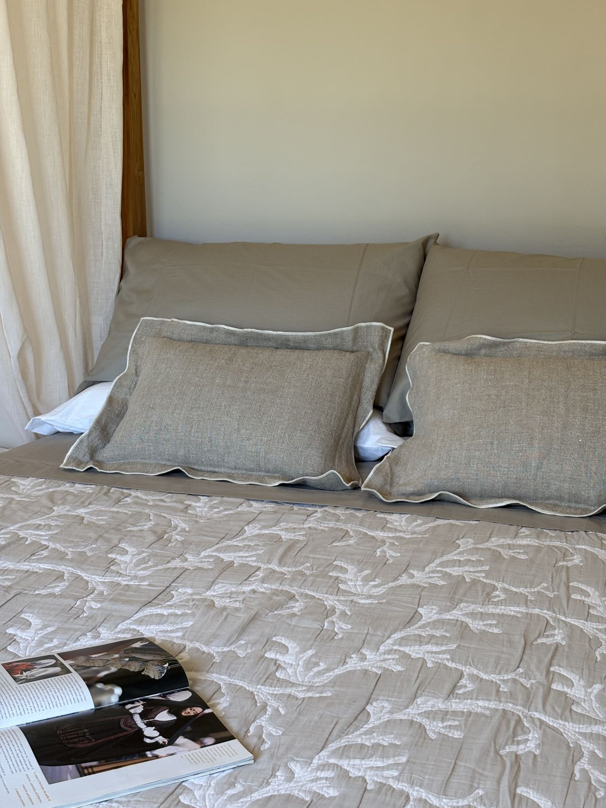

La Suite
Suite Ginestra
La más amplia de la casa: techo con vigas vistas, cama con dosel y cortinas de lino, una pequeña sala de estar con sofá y un gran ventanal abierto al campo de la Gallura.
Solicitar disponibilidad